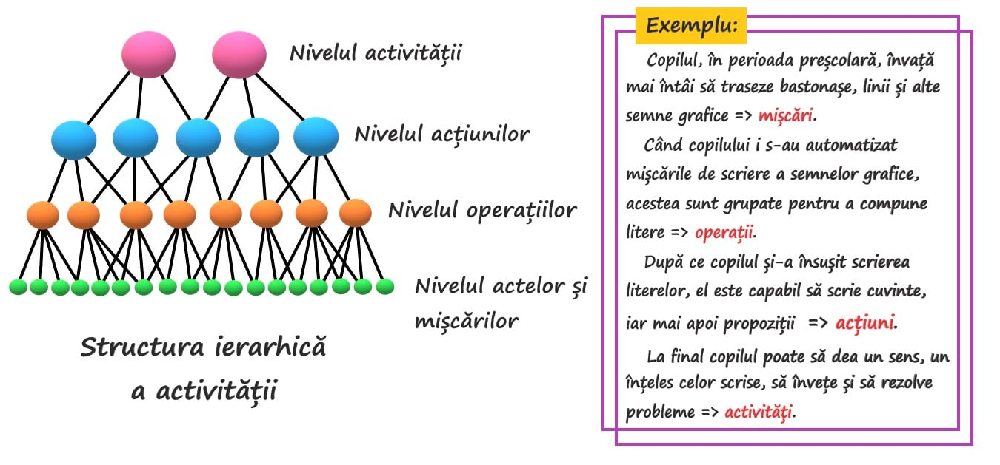

<div class="container">
    <div class="row">
        <div class="col-xs-12">
            <div class="title">
                <h1> Activitatea psihică</h1>
            </div>
            <br>
            <div class="row">
                <button 
                    type="button" 
                    class="btn btn-primary col-xs-4 senzation" 
                    (click)="onWhatIsActClick()"> 
                    Despre activitate
                </button>
            </div>    
            <br>
            <div class="row">
                <div *ngIf="whatIsAct === true" class="content">
                    <h4>
                        Activitatea este un raport, o relație între organism și mediu în care are loc consum energetic cu o finalitate adaptativă.
                    </h4>
                    <h4>Aceasta reprezintă totalitatea manifestărilor de conduită exterioară sau mintală care duc la rezultate adaptative. Totodată reprezintă cauza și efectul dezvoltării psihosociale și este resimțită ca o nevoie psihică, o cerință imperioasă a integralității ființei umane. </h4>
                    <h4>Calitățile unei activități:
                        <ul>
                            <li><b>activitate naturală</b>: manifestarea propriu-zisă a creierului;</li>
                            <li><b>activitate psihică</b>: raportată la trebuințele, tendințele și interesele omului; </li>
                            <li><b>activitate conștientă</b>: desfășurarea acesteia ca reflecție asupra lumii;</li>
                            <li><b>activitate spirtuală</b>: prin raportare la însușirile ideilor, ideologiilor.</li>
                        </ul>
                    </h4>
                    
                </div>
            </div>
            <hr>
            <div class="row">
                <button 
                    type="button" 
                    class="btn btn-primary col-xs-4 senzation" 
                    (click)="onLimbClick()"> 
                    Limbajul ca activitate psihică
                </button>
            </div>    
            <br>
            <div class="row">
                <div *ngIf="limb === true" class="content">
                    <h4>
                        Limbajul este activitatea psihică complexă, care se realizează printr-un ansamblu de semne și presupune o legătură strânsă cu funcțiile intelectuale și motorii.
                    </h4>
                    <h4>Tipuri de limbaj:
                        <ol>
                            <li><b>limbajul oral</b>
                                <ul>
                                    <li>este forma fundamentală a limbajului;</li>
                                    <li>poate fi colocvial dialogat sau monologat;</li>
                                    <li>comunicarea orală este facilitată prin contextul verbal și situațional;</li>
                                    <li>în limbajul oral expresivitatea este concretă și maximală, dependentă de alegerea cuvintelor și modul de frazare.</li>
                                </ul>
                            </li>
                            <li><b>limbajul scris</b>
                                <ul>
                                    <li>se dezvoltă în ontogeneză, mai târziu decât ce oral;</li>
                                    <li>este mult mai pretențios din punct de vedere al regulilor comunicării optime, astfel limbajul scris trebuie să fie corect alcătuit gramatical, structurat logic, explicat complet și accesibil;</li>
                                    <li>permite o reflectare mai fidelă a gândirii și totodată caracterul scrisului exprimă trăsături importante de personalitate.</li>
                                </ul>
                            </li>
                            <li><b>limbajul intern</b>
                                <ul>
                                    <li>este forma cea mai evoluată a limbajului și se dobândește prin interiorizarea limbajului oral;</li>
                                    <li>acesta constituie elementul de lucru al gândirii;</li>
                                    <li>determină suportul principal al activității mintale beneficiind de comprimare, concizie și viteza de realizare;</li>
                                    <li>se desfășoară în plan intern, ca vorbire cu sine, ca mijloc de elaborare a ideilor, judecățiolor, raționamentelor și ca modalitate de anticipare, conducere, coordonare a acțiunilor voluntare. </li>
                                </ul>
                            </li>
                        </ol>
                    </h4>
                </div>
            </div>
        </div>
    </div>
</div>
